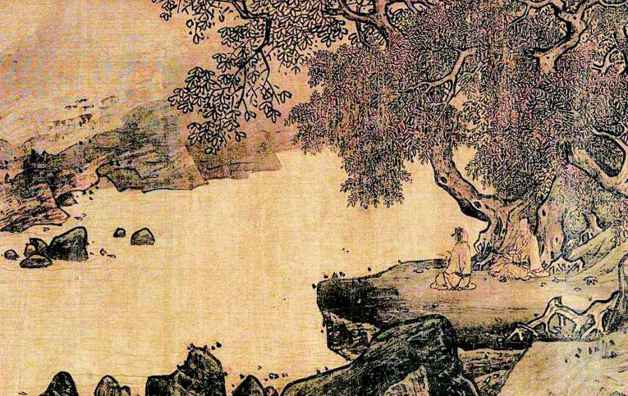
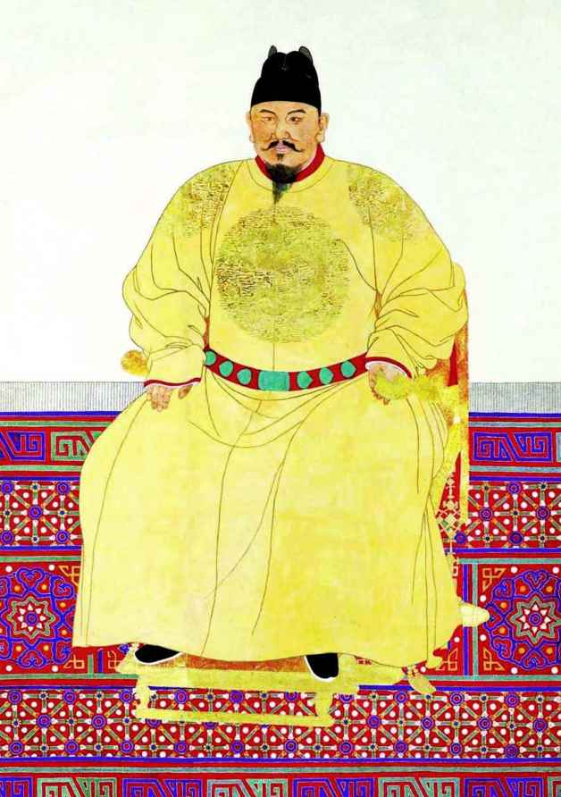
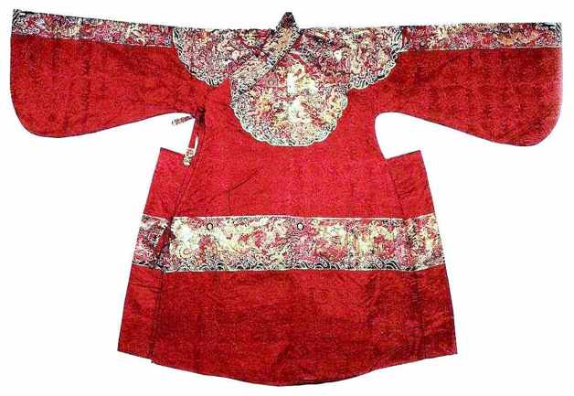
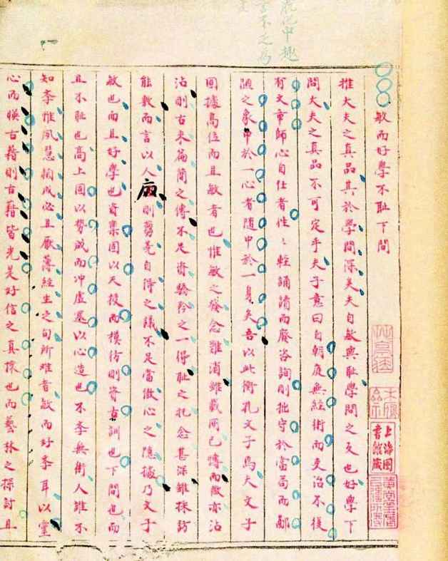

时势造英雄，这话既对，也不对。很多时候，似乎具有必然趋向的时势，最终却并没有造就英雄，只造就了伪英雄。这类伪英雄也曾一时叱咤风云，露出王者风范，但就在几乎走上其命运巅峰的关头，不堪辕轭，被最后一根稻草压得轰然倒地——“大顺帝”李自成、“天王”洪秀全，此之谓也。还有的时候，时势貌似造就了英雄，然而不可一世的“英雄”却辜负了时势的造就，不可思议地败给绝非为时势所看好所钟意的弱者、配角或二流人物，项羽之于刘邦如此，袁绍之于曹操如此，张士诚、陈友谅之于朱元璋亦如此。
张士诚，盐贩出身。元至正十三年起于泰州，至正十六年得据吴地，进而再得浙西，拥江南富庶之地，于是心满意足，惟知自守。至正二十五年，陈友谅起大军来取应天（南京），约士诚合而攻之。士诚竟以其“一亩三分田”为自足，不予呼应。其于元室同样以苟且求存，降了反，反了又降，极尽讨价还价之能事，终不脱小贩本性。苟且至至正二十七年，业已击败陈友谅的朱元璋，腾出手收拾张士诚；是年九月，徐达破平江（苏州），士诚自缢死。
陈友谅，渔夫出身。原为徐寿辉部下，至正二十年以阴谋发动兵变，挟寿辉，而自立汉王；不久，在采石矶（马鞍山）以铁挝击杀徐寿辉。时诸强中，友谅广有江西、湖广之地，兵强马壮，不可一世，骄横万分，锐意扩张，即兴兵东犯。旌旗蔽日，舳舻拥江，顺流扬威而至，志在必得，然而却被朱元璋用诱敌深入之计，大败于南京城外。两年后，双方再大战于鄱阳湖；此番，友谅尽出其精锐之师——当时天下无出其右的巨型舰队，“兵号六十万，联巨舟为阵，楼橹高十余丈，绵亘数十里，旌旗戈盾，望之如山”。朱元璋水军极弱，双方实力悬殊。但陈友谅一味恃强，朱元璋再次用计，以火攻大破陈氏巨型舰队，战局逆转，八月，友谅中流矢毙命。
张、陈二人，一个当时最富，一个当时最强。以势来论，元室衰微之际，他们谁都比朱元璋更有资格成就霸业，一统天下。但士诚其人，永远只看得见眼前利益，一个地地道道的守财奴，本性如此，毫无办法。陈友谅骄狠雄猜，心黑手辣，倒是贪得无厌之徒，怎奈量小气狭、器局逼仄——仅从一件事上即可知其胸襟：鄱阳之战，友谅势蹙之际，居然“尽杀所获将士”以泄忿，“而太祖则悉还所俘”——同样也是本性如此，毫无办法。
在两个膀大气粗的邻居面前，朱元璋尽处下风，当初陈友谅搞扩张，先对朱元璋下手，多少也是捏软柿子的意思。但是后来他肯定发现搞错了人，至于鄱阳湖决战他“矢贯其颅及睛而死”之际，只怕会感到平生最为后悔的一桩事，就是没有弄清朱元璋是怎样一个角色之前，即贸然对其出手。
而朱元璋，不管其他方面作何评价，我们得承认，他是古来“草寇”之另类。于是，脱颖而出，做成了古来“草寇”都想做而最后都做不成的事。其中，关键的关键，是朱元璋高度重视并解决好了知识分子问题。将领善战、主公明睿，是打天下的保证，但不足以得天下。匹夫起事，先天不足在文化上。人说战争是政治的继续，其实，政治也是战争的终点。没有人为战争而战争，打仗的目的在政权，而政权虽靠战争赢得，却无法靠打仗治理。从打天下到得天下，必须由知识分子队伍建设来衔接。朱元璋最不可思议之处就是，以一个地道的泥腿子，而能深入理解“文治”的意义。
解缙谈及此，说：
帝性神武明达……始渡江时，首兵群雄多淫湎肆傲，自夸为骄。帝独克己下人，旁求贤士，尊以宾礼，听受其言，昼夜忘倦。[2]
《翦胜野闻》载：
太祖在军中甚喜阅经史，后遂能操笔成文章。尝谓侍臣曰：“朕本田家子，未尝从师指授，然读书成文，释然开悟，岂非天生圣天子耶？”[3]
每克一地，朱元璋都不忘招贤求士。有名的一例，就是下徽州后召耆儒朱升问时政，而得到“高筑墙，广积粮，缓称王”的建议。他在采石访得儒士陶安，很急切地征询政见。陶说：现今群雄并起，他们所欲都“不过子女玉帛”，建议朱元璋“反群雄之志，不杀人，不掳掠，不烧房屋”，“首取金陵以图王业”。朱元璋大受启发。[4]《明通鉴》也记有与儒士唐仲实的类似谈话。胡大海打太平府时找到一个叫许瑗的儒士，派人送来见朱元璋，“太祖喜曰：‘我取天下，正要读书人！’”[5]
至正二十年，朱元璋的事业有了历史性的转折，标志是，这年三月，他成功地将刘基、宋濂、章溢和叶琛延入阵营。这四人声望素著，才智、文章、学问，皆一时泰斗。他们连同早些时候在滁州加入的李善长，组成了超一流的智囊团。以这些人为中坚的知识精英，不单在战争中为朱元璋运筹帷幄，更从法律、政制、礼仪、财税等诸多方面为未来明帝国设计一整套的秩序。明代的后世批评家回顾说：
汉高祖谓：“吾能用三杰[6]，所以有天下。”……我明聿兴，公侯爵赏数倍汉朝：李韩公[7]之勋烈无异萧何，徐魏公[8]之将略逾于韩信，刘诚意[9]之智计埒于张良……我朝开国元功，视汉高尤有光矣，大业之成，岂偶然哉！[10]
的确说到了点子上。
孟森先生论述明之立国，讲了三条：第一，“匹夫起事，无凭藉威柄之嫌”；第二，“为民除暴，无预窥神器之意”；第三，“一切准古酌今，扫除更始”。这第三条就是讲，明之立国，得益于文化上巨大成功，以大量制度创新，开启历史新阶段——“清无制作，尽守明之制作”，“（清人）除武力别有根柢外，所必与明立异者，不过章服小节，其余国计民生，官方吏治，不过能师其万历以前之规模”[11]。仅以“黄册”、“鱼鳞册”两大制度创新，即可窥其一斑。“鱼鳞册为经，土田之讼质焉；黄册为纬，赋役之法定焉。”[12]由设“黄册”，明初有了完全的人口普查，建起真正意义上的户籍制。从社会，它解决了流移人口问题并解放了往昔在贵族和地主豪强强迫下为奴的人民；从经济，它理顺和保障了国家赋役的征调；从政治，它使集权统治更彻底，影响跨越数百年而至如今。“鱼鳞册”又称鱼鳞图册，是特别编定的全国土地总登记簿。明初决定对最基本生产资料——土地实行丈量和登记，“厉行检查大小地主所隐匿的大量土地，以打击豪强诡寄田亩、逃避课税的行为……豪强地主被迫吐出他们过去大量隐匿的土地，就使朝廷掌握担承税粮义务的耕地面积大为增加”[13]，孟森评论道：“明于开国之初，即遍遣士人周行天下，大举为之，魄力之伟大无过于此，经界由此正，产权由此定，奸巧无所用其影射之术，此即科学之行于民政者也。”[14]
《明史》说：
终明之世，右文左武。[15]
“右文”，就是优先重视文化建设和文臣，这是明代政治突出特色，朱元璋一开始即抱此旨：
（太祖）响意右文，诸勋臣不平。上语以故曰：“世乱则用武，世治宜用文，非偏也。”[16]
洪武元年九月的《求贤诏》说：“朕惟天下之广，非一人所能治，必得天下之贤共成之。向以干戈扰攘，疆宇彼此，致贤养民之道，未之深讲，虽赖一时辅佐，匡定大业，而怀材抱德之士，尚多隐于岩穴，岂政令靡常而人无所守欤？抑朕寡昧，事不师古而致然欤？不然贤大夫，幼学壮行，思欲尧舜君民者，岂固没没而已哉？今天下甫定，日与诸儒讲明治道，其敢不以古先哲王是期？岩穴之士，有能以贤辅政，我得以济民者，当不吾弃。”[17]过去教科书将朱元璋从农民起义首领变为皇帝，解释为“变质”。这其实很对，朱元璋的确“变质”了，《求贤诏》就是“变质”的明证。
如果“不变质”，又如何？晚朱元璋二百来年，有那样的例子，可为镜鉴。
赵士锦是崇祯十年进士，在甲申之变中，羁刘宗敏营约二十日。脱身回到江南后，他把自己闻见写成《甲申纪事》——刘宗敏身为大将，进城后惟知敛财，日夜拷掠百官，勒其银两，“有完银多而反夹，完银少而反不夹者；有已完银而仍夹者，有不完银而终不受刑者，识者以为前世之报焉。”“自十八日起，每日金银酒器疋衣服辇载到刘宗敏所。予见其厅内段疋堆积如山，金银两处收贮，大牛车装载衣服高与屋齐。”刘宗敏所为，李自成非不知，而竟无力辖制：
初七日，李自成至宗敏寓议事，见庭中三院，夹着几百人，有垂毙者，不忍听闻。问宗敏得银若干，宗敏以数对。自成曰：“天象不吉，宋军师言应省刑，此辈宜放之。”宗敏唯唯。每日早将已死者用竹筐抬出，每筐三两人，以绳束之，至是五六日矣。

濠梁观鱼：子非鱼，安知鱼之乐。
凤阳古称“濠”，以濠水得名。庄子常留连于此。偕惠子“临渊羡鱼”，留下一段“子非鱼”的典故。

明太祖朱元璋。
朱元璋的真容，很难从绘像上见到，都经过了美化。据说先后有两位替他造像画师，因偏于写实而被杀。

锦衣卫袍服。
锦衣卫创于朱元璋，一度逾于法外，后期“诏内外狱毋得上锦衣卫，诸大小咸径法曹。终高皇帝世，锦衣卫不复典狱”。

明代科举乡试朱卷。
科举为中国古代国家干部用人考试制度，对中国成熟的文官政治起到重大作用，但渐渐也成为束缚知识分子精神思想的工具。
按“阶级斗争”眼光，“苦大仇深”的刘宗敏，胜利后痛打劣绅、分其浮财，是勇于夺回属于自己的劳动果实，他以对阶级敌人的毫不手软，证明自己不忘阶级苦、血泪仇，亦即没有“变质”。
反观朱元璋，虽也“苦大仇深”，胜利后却将阶级爱憎抛到九霄云外，下《求贤诏》、搞什么礼贤下士，把压迫自己的人奉为座上宾，与其沆瀣一气，这不是忘本是什么？不是变质是什么？